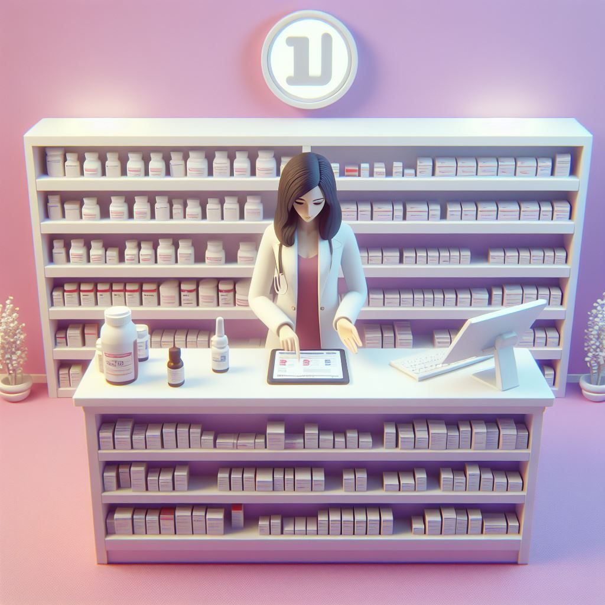

Garanta uma vida longa e cheia de alegria para o seu melhor amigo.
A VetWeb é o seu refúgio de confiança para o cuidado completo do seu pet. Com profissionais dedicados e serviços abrangentes, oferecemos uma experiência acolhedora e personalizada, garantindo bem-estar, a saúde e felicidades do seu pet!
Marque uma Consulta Conheça a VetWeb!Cuidado veterinário de qualidade
Nossa clínica veterinária é o local onde a paixão pelos animais se une á experiência em cuidados veterinários. Sob a liderança da Dra. Mariana Campbell, uma profissional altamente qualificada e comprometida, oferecemos serviços de saúde e bem-estar para animais de estimação. Venha conhcer nossa clínica e desfrute de atenção personalizada e do carinho que seu pet merece.
- Consultas de rotina e exames de saúde abrangentes
- Vacinação e imuização
- Cirurgias e procedimentos veterinários
- tratamento e controle de doenças
- Odontologia veterinária
- Atendimento de emergência 24 horas
- Nutrição e aconselhamento alimentar personalizado
Venha conferir o nosso petshop e farmácia
Além de ser uma clínica veterinária de confiança, também contamos com um completo petshop e farmácia.Nosso petshop oferece ampla seleção de produtos de alta qualidade, desde alimentos balanceados e petiscos deleciosos até brinquedos e outros acessórios para o seu pet. Na nossa farmácia, você encontratá uma variedade de medicamentos, produtos de cuidados e suplementos recomendados pelo nosso time de veterinários, garantindo que o bem-estar e saúde do seu amado pet estejam sempres em boas mãos. Tudo o que precisa para cuidar e mimar o seu pet está aqui, no nosso petshop e farmácia, com a mesma dedicação e qualidade que nos torno referência na área veterinária.
Ficou algum dúvida?
Quais serviços são oferecidos pela clínica veterinária da VetWeb?
A clínica VetWeb oferece uma ampla gama de serviços, incluindo consultas de rotina, vacinação, cirurgias, tratamento de doenças, cuidados odontológicos, atendimento de emergência 24 horas, programas de prevenção de pulgas, carrapatos e vermes, entre outros. Nosso objetivo é fornecer cuidados abrangentes e personalizados para garantir a saúde e o bem-estar do seu pet.
Quais espécies de animais a clínica veterinária atende?
Todos os Câes e Felinos domésticos
A clínica veterinária da VetWeb possui serviços de emergência?
Sim, pode ser ligar através do nosso número para emergências, (34) 99999-9999.
A clínica oferece serviços de banho e tosa?
Sim, oferecemos serviços de banho e tosa com os melhores produtos disponíveis no mercado, para deixar seu pet lindo e cheiroso.